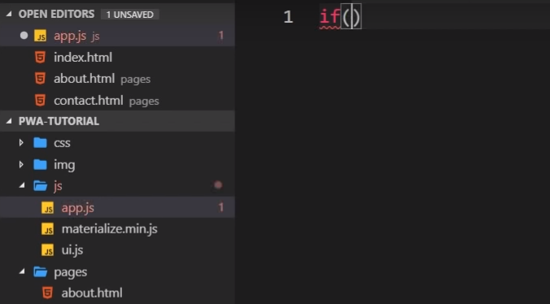

A service worker(sw.js)acts on a seperate thread from that of the browser;
it cannot interact with DOM.
It needs to be registered, and therie is a procedure diagram that needs to occur when changes are made to the sw.js
App.js is used to register it; ui.js is used for ui js
this is the procedure for SW: